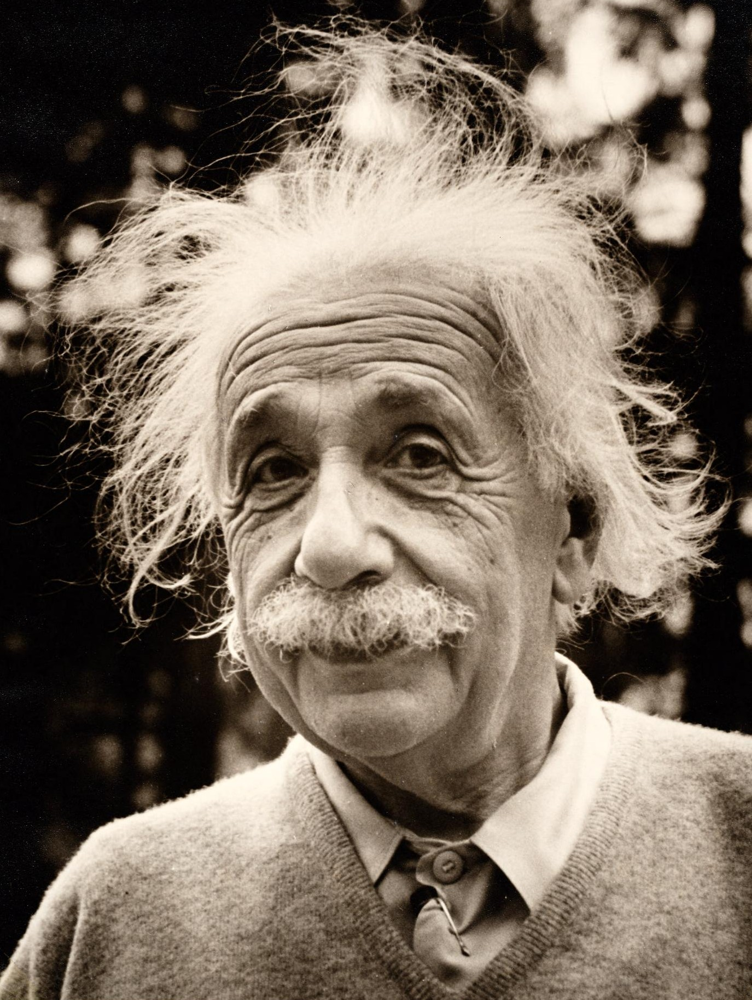

Current Teaching
-
STAT 49000 (2024 Spring): Predictive Modeling in Actuarial Science
- Slides. [PDF]

These quotes from Albert Einstein are deeply rooted in my learning philosophy (which I don't call it teaching philosophy). I hope you will also find them inspirational.
Education is what remains after one has forgotten what one has learned in school.
A person who never made a mistake never tried anything new.
Most people say that is it is the intellect which makes a great scientist. They are wrong: it is character.
The only source of knowledge is experience.
Unthinking respect for authority is the greatest enemy of truth.